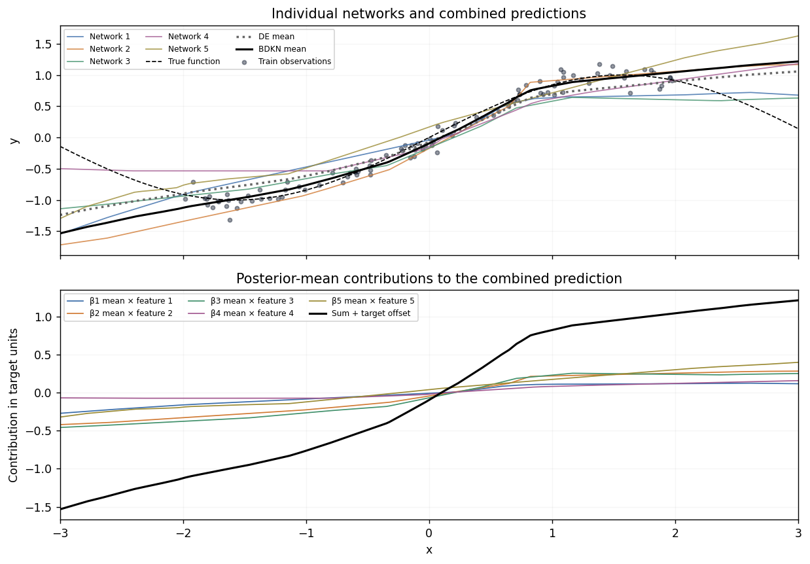
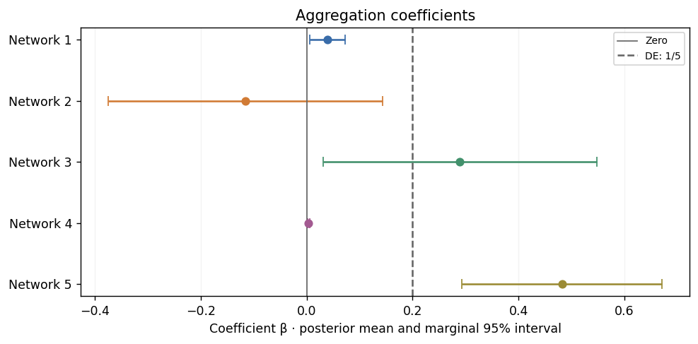
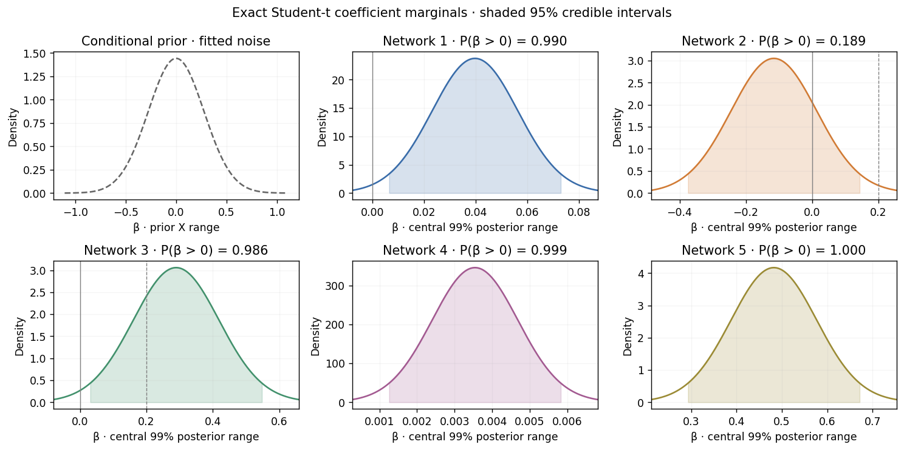
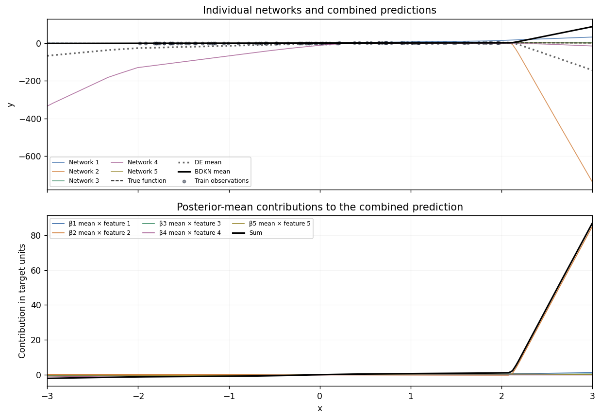
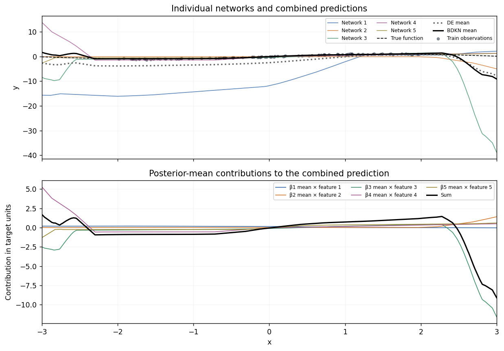
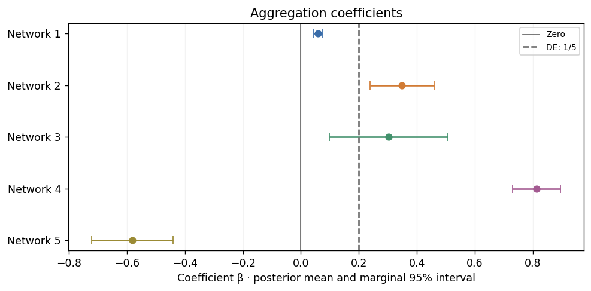
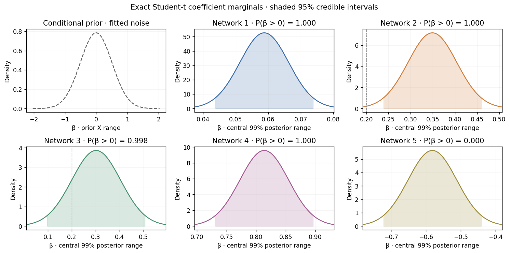
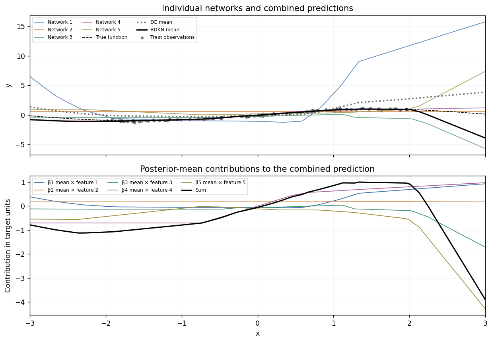

Regression comparison
Download resultsAggregation weights
Coefficients can be negative and need not sum to one. Intervals describe coefficient uncertainty; the dashed reference is DE’s fixed 1/H weight.
BDKN



Each density panel uses its own X range for readability; coefficient intervals above share a common axis. Prior reference conditions on fitted noise. Contribution shares use held-out inputs; test targets are used only for scoring.
| Network | β mean | 95% low | 95% high | P(β > 0) | Contribution share | Test RMSE | Test NLL |
|---|---|---|---|---|---|---|---|
| 1 | 0.17517 | -0.13543 | 0.48577 | 0.86707 | 0.12754 | 0.38313 | 1.62273 |
| 2 | 0.24406 | -0.10258 | 0.59069 | 0.91723 | 0.26779 | 0.49073 | 8.75495 |
| 3 | 0.40074 | -0.00952 | 0.81101 | 0.97227 | 0.28915 | 0.31065 | 1.53182 |
| 4 | 0.13482 | -0.08680 | 0.35643 | 0.88485 | 0.09272 | 0.34041 | 1.33298 |
| 5 | 0.24661 | 0.06158 | 0.43164 | 0.99525 | 0.22280 | 0.48393 | 4.31273 |
Functional repulsion · BDKN



Each density panel uses its own X range for readability; coefficient intervals above share a common axis. Prior reference conditions on fitted noise. Contribution shares use held-out inputs; test targets are used only for scoring.
| Network | β mean | 95% low | 95% high | P(β > 0) | Contribution share | Test RMSE | Test NLL |
|---|---|---|---|---|---|---|---|
| 1 | 0.03973 | 0.00650 | 0.07296 | 0.99020 | 0.03526 | 10.30147 | 2.60936 |
| 2 | -0.11535 | -0.37426 | 0.14355 | 0.18942 | 0.85275 | 162.17428 | 28.27194 |
| 3 | 0.28941 | 0.03130 | 0.54752 | 0.98582 | 0.03036 | 0.45093 | 1.39799 |
| 4 | 0.00354 | 0.00126 | 0.00583 | 0.99866 | 0.02801 | 100.47480 | 6.59199 |
| 5 | 0.48213 | 0.29286 | 0.67140 | 1.00000 | 0.05362 | 0.29851 | 1.44031 |
Weight repulsion · BDKN



Each density panel uses its own X range for readability; coefficient intervals above share a common axis. Prior reference conditions on fitted noise. Contribution shares use held-out inputs; test targets are used only for scoring.
| Network | β mean | 95% low | 95% high | P(β > 0) | Contribution share | Test RMSE | Test NLL |
|---|---|---|---|---|---|---|---|
| 1 | -0.01225 | -0.02161 | -0.00288 | 0.00544 | 0.05083 | 10.30050 | 4.66478 |
| 2 | -0.28334 | -1.02626 | 0.45958 | 0.22552 | 0.05179 | 1.33374 | 1.33048 |
| 3 | 0.29883 | 0.10708 | 0.49058 | 0.99871 | 0.47050 | 7.97740 | 3.09757 |
| 4 | 0.38217 | 0.26470 | 0.49964 | 1.00000 | 0.27064 | 2.53786 | 1.77086 |
| 5 | 0.48471 | 0.27319 | 0.69624 | 0.99999 | 0.15624 | 0.40609 | 1.58014 |
First-order repulsion · BDKN



Each density panel uses its own X range for readability; coefficient intervals above share a common axis. Prior reference conditions on fitted noise. Contribution shares use held-out inputs; test targets are used only for scoring.
| Network | β mean | 95% low | 95% high | P(β > 0) | Contribution share | Test RMSE | Test NLL |
|---|---|---|---|---|---|---|---|
| 1 | 0.05878 | 0.04378 | 0.07379 | 1.00000 | 0.14447 | 6.78741 | 2.89449 |
| 2 | 0.34907 | 0.23899 | 0.45916 | 1.00000 | 0.10034 | 0.92631 | 1.36543 |
| 3 | 0.30197 | 0.09767 | 0.50628 | 0.99792 | 0.11977 | 1.69304 | 1.74537 |
| 4 | 0.81370 | 0.73121 | 0.89620 | 1.00000 | 0.32169 | 0.30151 | 0.40175 |
| 5 | -0.58136 | -0.72105 | -0.44168 | 0.00000 | 0.31374 | 1.87423 | 2.52826 |